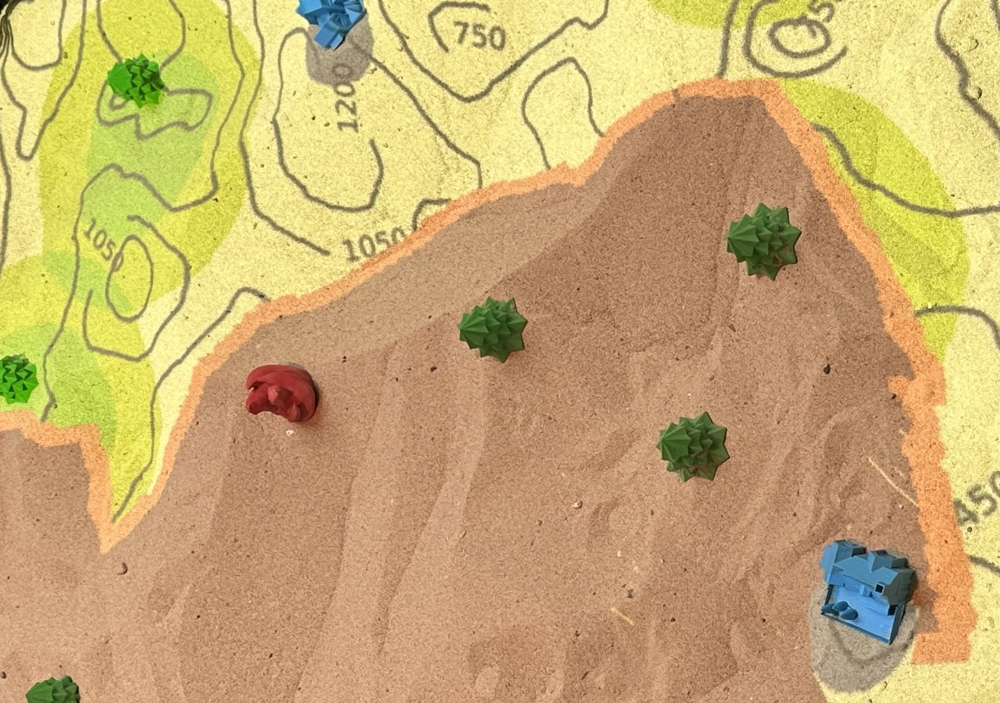
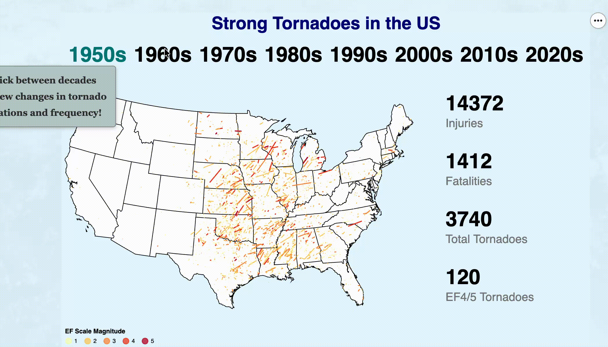

Visualization is essential for making complex information understandable and actionable. I've created dashboards, interactive charts, and even an interactive sandbox for professional and academic research projects. My work emphasizes clarity, accuracy, and (sometimes) creativity, helping others to glean their own meaning from a dataset or simulation. This section highlights projects where communication and visual design were as important as the data itself.
Projects

Built an interactive sandbox using multiple color and depth sensors to display a wildfire simulation over terrain formed by the user. Expanded a MITRE-developed wildfire simulation to receive user input on terrain, vegatation, and real-time mitigation techniques. Minimized latency to improve immersion and added game-ified score components to encourage learning of firefighting techniques.

Designed, wrote, and programmed an interactive article that explains trends in American tornado activity over time, highlighting the shifts in activity towards the Southeast. Utilized geo-spatial data to tell a story with long-term human impacts.
Get In Touch
Email me anytime or connect with me on LinkedIn